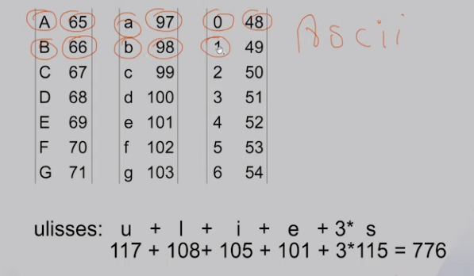
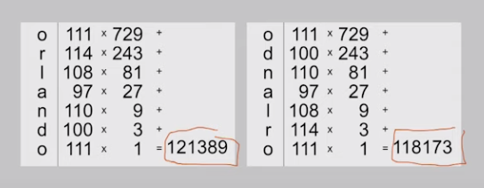
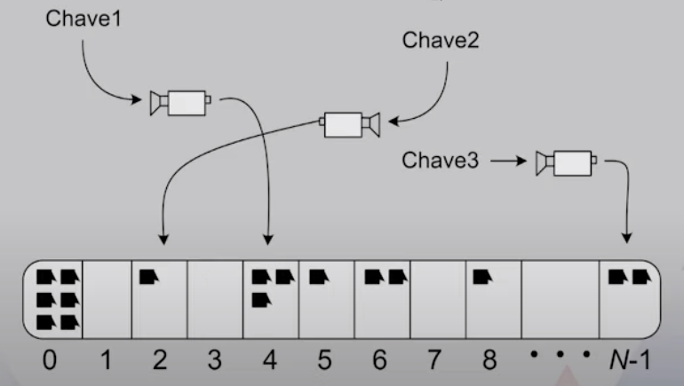

Disciplinas
-
ESTRUTURA DE DADOS-T01-2024-1 Concluído
Materiais
Vídeo 4 - Estruturas de Dados - Conceitos de Tabela Hash. sendProf° ministrante: Ulisses Martins Dias.
Conteúdo
Conceitos de Tabela Hash.
Roteiro:- Motivação.
- Tipo Abstrato de Dados.
- Detalhes de Implementação.
- Funções de Hash.
Motivação.
- Sabemos que:
- Busca sequencial executa em tempo O(n).
- Busca binária executa em tempo O(log(n)).
- Busca binária exige vetor ordenado.
- Seria possível efetuar uma busca em tempo melhor do que O(log(n))?
- Quais restrições devem existir sobre os dados?
- Tabelas de Hash (ou Tabelas Hash) permitem buscas em tempo constante, satisfeitas algumas restrições.
- Essa estrutura pode ter vários nomes como: dicionários, mapas, arrays associativos, e assim por diante.
- A princípio, a chave de busca pode ser de qualquer tipo.
Tipo Abstrato de Dados.
- retrieveltem(k): retorna uma entrada com chave igual a k, se ela existir. Caso contrário, retorna nulo.
- insertltem(k, v): insere uma entrada v na chave k se a chave não existir. Caso contrário, atualiza o valor associado a k.
- deleteltem(k): remove a chave k e o valor associado a ela.
- size(): retorna o número de entradas.
- keySet(): retorna uma lista encadeada de todas as chaves armazenadas na tabela.
- values(): retorna uma coleção contendo todos os valores associados com as chaves armazenadas na tabela.
- entrySet(): retorna uma coleção contendo todas as entradas (chave-valor) da tabela.
Implementação.
- A própria chave deve ser usada para organizar os dados em memória.
- Cada entrada da estrutura é composta por um par "chave-valor" (k, v). A associação entre k e v define o mapeamento.
- A chave é um identificador único e deve ser vista como um "endereço" para seu valor.
- A tabela pode ser organizada em memória como um vetor, dado que este permite acesso em tempo constante.
- As chaves podem ser de qualquer tipo de dados, mas para efetuarmos a busca no vetor, precisaremos de uma função que mapeie chaves em números inteiros.
- Seja h a função que faz o mapeamento (também chamada de função de espalhamento) e k a chave, o endereço de memória será dado por h(k).
- Se os valores retornados por h(k) forem bem distribuídos em um intervalo entre 0 e N-1, então precisamos de um vetor de capacidade N.
- Assumindo ausência de colisões, essa estrutura básica seria suficiente.
Funções de Hash.
- A função de hash h mapeia cada chave em um intervalo de 0 a N-1, onde Né a capacidade do arranjo.
- É possível tratar colisões, mas a melhor estratégia por enquanto é tentar evitá-las.
- Uma função de hash é boa se minimiza a ocorrência de colisões.
- A primeira tarefa da função será transformar chaves de tipos arbitrários em inteiros.
- Vamos assumir que queremos armazenar informações de funcionários de uma empresa e indexar essas informações pelo login único da pessoa.
- O login pode ser o primeiro nome da pessoa, mas se este já foi escolhido por alguém, então outro deve ser selecionado pelo funcionário.
Uma função de hash pode primeiramente mapear os caracteres para inteiros:
Podemos mapear qualquer login em inteiro:
ulisses 776
danielle 830
amanda 610
cleópatra 1218
- O valor inteiro encontrado pode ser o índice da entrada em um vetor.
- Essa ideia ilustra uma implementação básica da tabela hash.
Essa estratégia gera colisões:
orlando 751
odnalro 751
adriana 720
ariadna 720
Uma função de hash melhor levaria em conta a posição dos caracteres c₁ na cadeia C = (Co, C1, C2,..., Ck-1).
C₀aᴷ⁻¹ + C₁aᴷ⁻² + C₂aᴷ⁻³ + ... + Cₖ₋₂a¹+Cₖ₋₁
Para algum a diferente de 0 ou 1.
- Por exemplo, com a = 3, teríamos os seguintes valores para orlando e odnalro: 
- Um valor de a alto (33, 37, 39 ou 41) tende a diminuir o número de colisões para algumas poucas.
Nesse caso, é possível fazer com que cada endereço tenha espaço para mais de uma entrada.
- Um valor de a alto (33, 37, 39 ou 41) pode levar a um overflow do intervalo dos inteiros.
- A compressão dos valores pode fazer parte da função. O resto da divisão por N estabiliza os valores em um intervalo [0.. N-1].
i mod N
- Se usarmos N = 1000, teremos muito menos colisões do que com N = 100.
- Com N = 100, cada chave irá colidir com várias outras chaves.
- Com N = 101 não teremos colisões.